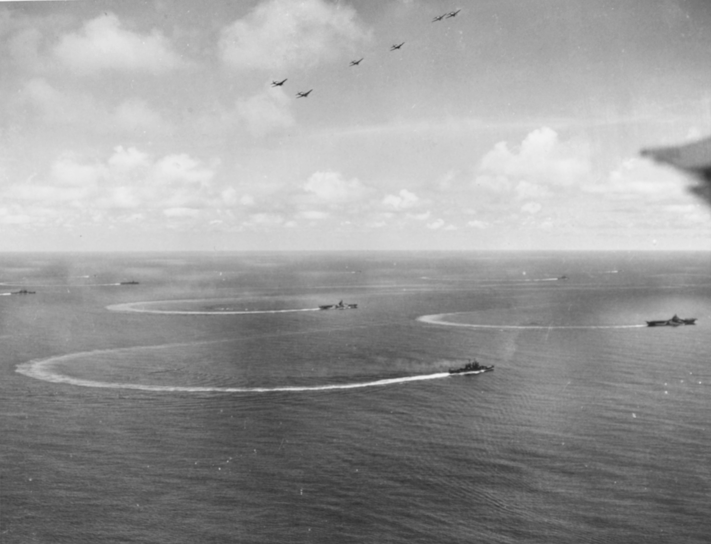

Directions: Fill in the chart as we study each step of the advance. Keep this page in your notebook. You will use it again on the review day before the unit test, and it is the ledger the writing task argues from.

| Step | Date | What it bought | What it cost | What it taught |
|---|---|---|---|---|
| Midway | ||||
| Guadalcanal | ||||
| The Marianas | ||||
| Iwo Jima | ||||
| Okinawa |
The pattern in one paragraph. Read down the cost column of your chart. Describe how the cost changed as the advance closed on Japan, and explain in your own words why each step cost more than the step before it. Use at least three rows of the chart.
| Step | Date | What it bought | What it cost | What it taught |
|---|---|---|---|---|
| Midway | June 1942 | The initiative. Four Japanese fleet carriers sunk, and Japan lost the ability to take the offensive. | About 300 American dead; about 3,000 Japanese dead, including trained carrier pilots. | Code breaking and carrier air power could decide a battle before the fleets met. |
| Guadalcanal | August 1942 to February 1943 | Henderson Field and the first major Allied offensive of the Pacific war. | About 7,100 American dead; about 31,000 Japanese dead, many to hunger and disease after supply failed. | A garrison cut off from supply loses even if it is never stormed. That is the lesson island hopping was built on. |
| The Marianas | June to July 1944 | Range. B-29 bases within round trip reach of Japan, used for the firebombing campaign from November 1944. | About 3,400 American dead on Saipan; a Japanese garrison of about 30,000 nearly destroyed, and many civilians dead. | Garrisons near the home islands fought nearly to the last man, and civilians died inside the fighting. |
| Iwo Jima | February to March 1945 | A fighter base for bomber escorts and an emergency landing field for damaged B-29s. | About 6,800 American dead; about 18,000 Japanese dead, nearly the whole garrison, on eight square miles. | A defense dug into tunnels and caves, fought to the death, is what a landing on Japan would meet at larger scale. |
| Okinawa | April to June 1945 | The base from which the invasion of Japan was to be launched. | About 12,500 American dead; above 100,000 Japanese military dead; heavy Okinawan civilian deaths; kamikaze waves against the fleet. | Read as a preview of invading Japan itself, with every figure set to grow. |
The pattern in one paragraph. Strong answers read the cost column as a rising line and explain it. Midway was a sea battle won at a distance, at a cost of about 300 American dead. Each later step meant landing on defended ground closer to Japan, against garrisons that fought from prepared positions and died nearly whole instead of surrendering, and from Okinawa onward among a civilian population. The paragraph earns full credit when it names the mechanism, closing distance, dug in defense, and no surrender, and not only the rising numbers.